Architectures matérielles & Systèmes d'exploitation
Un peu d'histoire
Du premier processeur, ouvrant la voie à l'informatique, aux récents microprocesseurs et aux systèmes d'exploitation mobiles, l'histoire a été rapide. Elle est retracée ci-dessous en quelques dates clés :
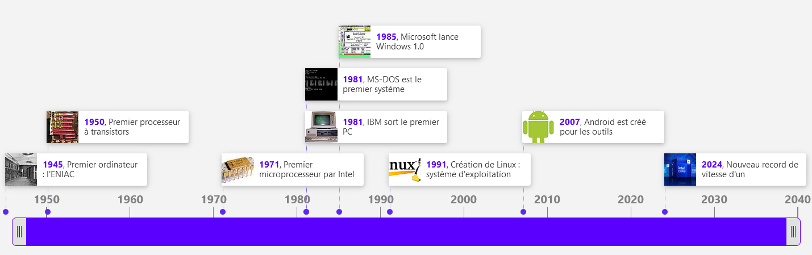
Système sur puce
De l’ordinateur au smartphone / tablette
Au sein d’un ordinateur "classique" tel qu’un PC de bureau, les choses sont assez simples.
- Le processeur (ou CPU – Central Processing Unit) se charge de réaliser les calculs les plus répandus, ceux qui permettent par exemple de faire tourner le système d’exploitation ou un navigateur web. Aujourd'hui, on parle plutôt de microprocesseur car sa taille miniaturisée lui permet d'être intégré à n'importe quel élément numérique actuel.
Pour aller plus loin
Au niveau technique, le microprocesseur est un circuit electronique intégré qui effectue des opérations. Sa taille est de plus en plus réduite.
Les opérations qu'est capable d'effectuer un microprocesseur sont son jeu d'instructions.
La vitesse d'un microprocesseur est définie par son horloge : l'horloge fournit le rythme des tâches élémentaires effectuées, en Hz (nombres de pulsations par seconde).
Concept
La rapidité à effectuer des instructions par un microprocesseur s'exprime en MIPS (Millions d'Instructions Par Seconde).
Historiquement, deux familles de microprocesseurs sont disponibles sur le marché, mais basées sur des fonctionnements opposés :
Les processeurs RISC (Reduced Instruction Set Computer) proposent un nombre restreint d'instructions, qu'il est possible d'effectuer efficacement et très rapidement.
Les processeurs CISC (Complex Instruction Set Computer) disposent d'un nombre d'instructions plus important et plus élaborés, mais sont donc moins rapides pour effectuer ces instructions.
Le choix du processeur selon le besoin a donc une importance, mais notons que les dernières évolutions en termes de rapidité permettent de créer des RISC très puissants dont l'utilisation peut être comparée à celle des CISC, rendant la spécificité de chaque famille moins évidente.
- La mémoire vive (RAM – Random Access Memory) permet d’enregistrer temporairement les données traitées par le processeur.
Pour aller plus loin
Lorsque l'on parle de mémoire, généralement on parle de mémoire RAM.
Cependant, les ordinateurs ont d'autres types de mémoires qui ne sont généralement pas connus.
Le processeur d'un ordinateur possède une mémoire cache d'une certaine quantité selon le type de processeur. Plus le processeur est puissant, plus le cache est important. Le cache sert à stocker des informations redondantes afin d'éviter au processeur de devoir chercher ces dernières dans la mémoire RAM. En effet, la mémoire cache du processeur est beaucoup plus rapide à transmettre les informations que la mémoire RAM qui se "trouve plus loin" dans l'ordinateur.
La mémoire morte ou en anglais ROM (Read Only Memory) est une mémoire en lecture seule, on ne peut donc pas écrire dans celle-ci.
C'est donc une mémoire prévue pour être lues plusieurs fois et non modifiées.
Dans un ordinateur, on trouve de la mémoire morte dans le BIOS de l'ordinateur où sont stockées des informations nécessaires au démarrage de l'ordinateur (instructions de démarrage, etc).
Il existe plusieurs types de mémoire morte dont UVPROM, les PROM, les EPROM et les EEPROM.
Certaines peuvent être re-programmables comme EPROM et EEPRO.
La mémoire flash a grosso-modo les mêmes caractéristiques que la mémoire RAM à la différence qu'une coupure électrique ne fait pas perdre les données. On trouve plusieurs utilisation de cette mémoire flash comme les cartes mémoires ou les disques SD qui sont des disques électroniques et qui remplacent les disques HDD qui eux, sont des disques mécaniques.
Principe de base
En utilisant les deux éléments précédents, un principe de base permet l'activité numérique : tout programme est une suite d'opérations simples qui ont toutes la même forme :
- Une instruction élémentaire à effectuer est chargée de la mémoire sur le processeur.
- Les opérandes (données sur lesquelles va être fait le calcul) sont chargées de la mémoire sur le processeur.
- Le calcul de l'opération élémentaire est effectué.
- Le résultat de l'opération est stocké en mémoire.
On trouve aussi la carte graphique (ou GPU – Graphics Processing Unit) qui se charge d’afficher une image, qu’elle soit en 2D ou bien en 3D comme dans les jeux. La carte-mère relie entre eux tous les composants, le CPU, le GPU, mais également la RAM et d’autres cartes additionnelles et petites puces.
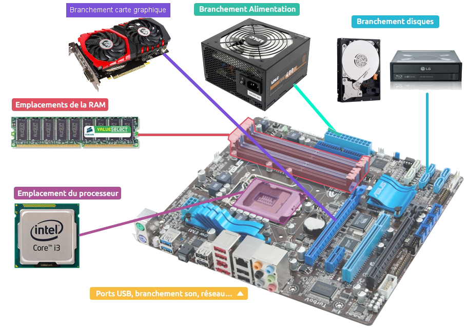
Composants d'une carte mère
Mais depuis le début de l’ère des smartphones, on assiste à l’émergence de systèmes tout-en-un. Ainsi, presque tout le contenu d’un ordinateur se retrouve finalement dans une seule puce sur le smartphone : le System on a Chip (SoC), ou système sur une puce en français. C'est un circuit intégré essentiel au fonctionnement des objets connectés et des smartphones.
Les SoCs
Vidéo
Cette vidéo en anglais vous décrit la conception d'un SoC (Pensez à activer les sous-titre dans le menu paramètre si vous en avez besoin).
Définition
Un "système sur une puce", souvent désigné dans la littérature scientifique par le terme anglais "system on a chip" (d'où son abréviation SoC), est un système complet embarqué sur une seule puce ("circuit intégré").
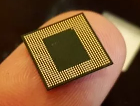
Un SoC comprend à la fois :
- Le processeur central à un ou plusieurs coeurs de calcul.
- Un processeur graphique.
- La mémoire vive.
- La mémoire statique (Rom, Flash, EPROM).
- Les puces de communications (Bluetooth, WiFi, 2G/3G/4G, LoRa…).
- Les capteurs nécessaires au fonctionnement d’un smartphone ou d’un objet connecté.
- ...
Composition d'un SoC
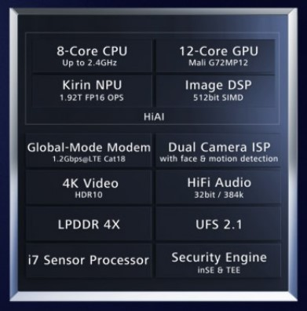
Architecture simplifiée du SoC Kirin-970 - Huawei
- Le processeur (CPU)
Le processeur ou « Central Processing Unit » (CPU) est le coeur du SoC. Son fonctionnement est identique à celui d’un ordinateur. On y retrouve donc plusieurs coeurs cadencés à différentes fréquences effectuant des threads et stockant des informations en cache.
- Les coeurs
Un processeur compte généralement plusieurs coeurs, on parle couramment dans la littérature technique de dual-core, quad-core ou d’octo-core parfois (c'est le cas de l'exemple ci-dessus). Ainsi, ces processeurs se composent respectivement de deux, quatre ou huit coeurs. Ceux-ci permettent de lancer en parallèle plusieurs applications de manière simultanée (multitâche) et permettent l’utilisation d’applications lourdes comme des jeux.
En jaune, les huit coeurs CPU
- La fréquence
La fréquence d’un processeur est le nombre de cycles de calculs qu’il peut effectuer chaque seconde. Elle va donc naturellement déterminer la durée d’exécution d’une tâche : plus la fréquence du processeur est élevée, plus l’exécution d’une tâche est rapide. Mesurée en gigahertz (GHz), celle-ci est souvent différente entre chaque coeurs. - Les threads
Les coeurs réalisent ce qu’on appelle un thread, littéralement un fil d’exécution, une tâche qui doit être réalisée par le processeur. - Le cache
C’est une petite mémoire rapide intégrée au processeur. En effet, celle-ci va permettre de stocker les informations récurrentes au plus près du processeur pour éviter d’avoir à aller les chercher sans arrêt dans la RAM.
- La puce graphique (GPU)
La puce graphique ou « Graphics Processing Unit » (GPU) est un élément crucial pour les gamers, car c’est lui qui est en charge de calculer les images afin de pouvoir les afficher à l’écran. Celle-ci prend ainsi en charge les images en 2D et en 3D que ce soit une page web, une vidéo ou encore une partie endiablée de votre jeu favori. Une carte graphique doit donc réaliser un nombre élevé de tâches, puisqu’elle doit par exemple calculer la couleur à afficher sur chaque pixel de l’écran de votre smartphone.
Par exemple dans le cas d’une image Full HD (1920×1080), le GPU affiche 2 073 600 pixels différents ou 8 294 400 pixels pour de l’Ultra HD (3840×2160). Rappelons également que ce calcul est fait selon la fréquence de rafraichissement de l’écran. Celle-ci peut par exemple varier entre 60 et 120 fois par secondes c’est-à-dire entre 60 Hz et 120 Hz. - La puce neuronale (NPU)
La puce neuronale ou « Neuronal Processing Unit » (NPU) est une puce en charge de l'intelligence artificielle des smartphones. Les calculs de l’intelligence artificielle ont longtemps été faits par le biais de serveurs dans le cloud (distant). Néanmoins, depuis quelques années pour des raisons de rapidité et de respect de la vie privée, les calculs se font désormais directement sur les smartphones. C’est utile par exemple dans « Google Translate » pour reconnaître des caractères, pour optimiser les photos ou encore l’autonomie. - Le modem (Interface)
Les smartphones embarquent également dans le SoC une unité réseau assurant la prise en charge des différents protocoles de communication. Cette unité est la partie la plus compliquée à développer et à implémenter sur un SoC. Néanmoins, il s’agit d’un élément crucial afin d’assurer le nomadisme d’un smartphone en itinérance. Le modem intégré au SoC gère non seulement le Wifi, le Bluetooth, le NFC ou bien encore les technologies mobiles. C’est-à-dire la 4G, ou plus récemment la 5G mais également de plus vieux réseaux tels que la 3G. - Le processeur de signal numérique (DSP) Le processeur de signal numérique ou « Digital Signal Processor » (DSP) est en charge de traiter les signaux numériques. Ainsi, il va permettre le filtrage, la compression ou encore l’extraction de différents signaux tels que la musique ou encore une vidéo.
- Le processeur de signal d’images (ISP)
Le processeur d’image ou « Image Signal Processor » (ISP) est une puce prenant en charge la création d’images numériques. En effet de par leurs tailles minuscules, les capteurs photo des smartphones ne sont pas de très bonne qualité d’un point de vue de l’optique pure. La qualité qu’il est actuellement possible d’obtenir va être intimement liée à cette puce qui va compenser logiquement certaines limitations optiques (zoom numérique …). - Le processeur de sécurité (SPU)
Le processeur de sécurité ou « Secure Processing Unit » (SPU) est le « bouclier » du smartphone. Son alimentation électrique est indépendante afin de ne pas pouvoir être éteint en cas d’attaque sur celui-ci. Le SPU est d’une importance capitale. En effet celui-ci va stocker les données biométriques, bancaires, la carte SIM ou encore les titres de transport. C’est lui qui contient les clés de chiffrement des données de l’utilisateur. - La mémoire LPDDR
La mémoire LPDDR ou « Low Power Double Data Rate », littéralement : « Vitesse de données double à faible consommation », est un type de mémoire, reprenant la technologie DDR SDRAM, en l'adaptant aux périphériques mobiles (smartphone, ordinateur portable…), via des technologies d'économie d'énergie. - La mémoire flash
l'UFS ou « Universal Flash Storage » est une spécification de mémoire flash pour les appareils photos numériques, les téléphones mobiles et autres appareils numériques. Elle a pour objectif d'améliorer la vitesse de transfert et la fiabilité du stockage en mémoire flash tout en éliminant la diversité des connecteurs.
Les avantages d’un SoC par rapport à un système classique
Outre leur taille miniaturisée bien adaptée aux terminaux nomades (smartphones et tablettes), les SoC offrent d'autres avantages par rapport aux systèmes "classiques" rencontrés dans les ordinateurs :
- les SoC sont conçus pour consommer beaucoup moins d'énergie qu'un système classique à puissance équivalente de calculs.
- Cette consommation réduite d’énergie permet dans la plupart des cas de s'affranchir de la présence d’un système de refroidissement actif comme les ventilateurs ou de type « watercooling ». Un système équipé de SoC est donc silencieux car il chauffe relativement peu.
- Etant donné les distances très faibles entre, par exemple, le CPU et la mémoire, les données circulent beaucoup plus vites, ce qui permet d'améliorer grandement les performances ; en effet, dans les systèmes "classiques" les BUS chargés d’acheminer les données sont souvent des "goulots d'étranglement" en termes de performances à cause de la vitesse limitée de circulation des données.
Pour arriver à de bonnes performances en ménageant la consommation d’un processeur, il est possible de jouer sur plusieurs facteurs : la fréquence du processeur, le type de coeur au sein du processeur, ainsi que le procédé de gravure.
La fréquence de fonctionnement est un facteur important dans la consommation d’un processeur, mais trop la baisser a de sérieuses conséquences sur ses performances. On trouve actuellement des puces dotées d’une fréquence de fonctionnement comprise entre 1,3 et 3 GHz environ.
Le type de coeurs au sein du processeur a également son rôle à jouer. Ainsi par exemple un coeur Cortex-A53 consomme beaucoup moins qu’un coeur Cortex-A72, mais ne fournit absolument pas le même niveau de performance. Si le premier est spécialement conçu pour consommer extrêmement peu d’énergie, le second est plus porté vers la performance, mais consomme beaucoup plus. C’est pour cette raison que les Cortex-A53 sont souvent utilisés par quatre ou huit, tandis que le Cortex-A72 est plus souvent utilisé par deux ou quatre coeurs. On trouve alors souvent des configurations hybrides faisant appel à des coeurs haute performance pour les tâches lourdes (telles que jeux 3D) en combinaison avec des coeurs très basse consommation (pour relever des mails par exemple).
Enfin de nouveaux procédés de gravure sont également un facteur crucial dans le domaine des SoC pour offrir de bonnes performances avec une faible consommation. Il permet d’obtenir une amélioration des performances (en augmentant le nombre de transistors) tout en limitant l’augmentation de la taille de la puce ainsi que sa consommation électrique.
Les nouveaux procédés de gravure des semi-conducteurs CMOS telle que la lithographie extrême ultraviolette, ont permis de réduire significativement la taille des composants électroniques constituants les SoC. Ainsi, on dispose aujourd’hui de la même puissance dans un smartphone que celle embarquée dans un ordinateur il y a quelques années de cela. Ceci s’est cependant fait au prix d’une complexité technologique croissante. L’actuelle génération de SoC est gravée en 3 nm (1 nm = 10-9 m) depuis 2023. La prochaine génération gravée en 2 nm devait voir le jour en 2026.
Pour les derniers modèles de smartphones, la principale difficulté technologique a été d’intégrer aux SoC les modems 5G qui sont complexes à fabriquer.
La finesse de gravure des puces utilisées par l'industrie technologique est une donnée importante souvent associée (à tort) à de meilleures performances. En réduisant la taille des transistors, on peut tout simplement en mettre plus sur une même surface. Les puces ainsi produites peuvent effectuer plus de calculs sans consommer d'énergie supplémentaire. En réalité, chaque constructeur emploie des procédés qui diffèrent et ce n'est pas nécessairement la taille qui compte.
En effet, pour une même finesse de gravure, la densité de transistors intégrés à une puce peut largement varier. Par exemple, la densité des processeurs Intel gravés en 10 nm est d'environ 106 MT/mm² (106 millions de transistors par mm²), alors que celle des processeurs TSMC gravés en 7 nm est de 97 MT/mm² seulement. La densité de transistors prime donc sur leur finesse comme le montre le comparatif suivant :
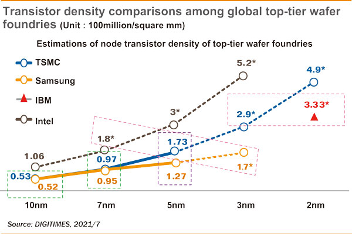
Bonus
En bonus, une vidéo très intéressante sur la société Taiwan Semiconductor Manufacturing Co (TSMC), leader mondial des semi-conducteurs :
Quelques familles de SoC utilisées dans les smartphones
Nous avons vu précédemment que la liste de toutes les instructions qu'un processeur peut exécuter s'appelle son jeu d'instructions. Celui-ci définit les instructions supportées, ainsi que la manière dont elles sont encodées en mémoire.
Suivant les fabricants et les besoins, il existe plusieurs architectures, c'est-à-dire plusieurs jeux d'instructions. Deux d’entre elles prennent place dans la grande majorité des produits électroniques conçus ces vingt dernières années.
Voici l’architecture la plus répandue dans le monde. Conçue par Intel, elle est utilisée commercialement depuis 1978. Cette architecture a permis de développer les processeurs des ordinateurs, des serveurs ou encore de certaines tablettes. Cependant, l’architecture X86 est beaucoup moins utilisée pour développer les modèles d’un système sur puce IoT.
Conçu par la société du même nom, l’architecture ARM a été développée en interne à la fin des années 1980. C’est en 1987 qu’elle est la première fois utilisée dans la gamme d’ordinateurs 32 Bits Archimede. L’architecture ARM ne dépend pas d’un seul fabricant. Le modèle économique de l’entreprise repose sur la vente de licences à d’autres fabricants. Les SoC d’ARM se retrouvent ainsi dans la plupart des smartphones et des objets connectés.
Au sein de la génération actuelle de smartphones, on trouve une grande variété de SoC en fonction des différents constructeurs :
| Nom du SoC | SAMSUNG Exynos 2400 |
APPLE A17 Pro |
QUALCOMM Snapdragon 8 Gen 3 |
HISILICON Kirin 9010 |
MEDIATEK Dimensity 9400 |
| Gravure | 4 nm | 3 nm | 4 nm | 5 nm | 3 nm |
| Jeu d'instructions du CPU |
ARM v9-A | ARM v9-A | ARM v9-A | ARM v8.2-A | ARM v9.2-A |
| CPU | 10 coeurs 64 bits |
6 coeurs 64 bits |
8 coeurs 64 bits |
8 coeurs 64 bits |
8 coeurs 64 bits |
| GPU | Samsung Xclipse 940 (12 cœurs) |
Apple GPU Pro (6 cœurs) |
Adreno 750 (8 cœurs) |
Maleoon 910 (4 cœurs) |
Immortalis-G925 (12 cœurs) |
| Modem | Snapdragon X75 5G | Snapdragon X70 5G | Snapdragon X75 5G | Balong 5000 5G | Mediatek 5G |
| Modèle(s) smartphone(s) | Samsung Galaxy S24 | Apple iPhone 12 | Xiaomi 14, Oppo Find X7, Honor Magic 6, OnePlus 12, Nubia Z60 |
Huawei P70, Huawei Mate XT |
Oppo Find X8, Vivo X200 Pro |
Les systèmes d'exploitation
Le fonctionnement général
Le système d'exploitation est un ensemble de programmes qui va permettre d'utiliser les éléments physiques d'un ordinateur pour exécuter les applications nécessaires à l'utilisateur.
L'élement fondamental du système d'exploitation est le noyau, c'est lui qui permet et gère l'accès aux ressources matérielles.
Ses principales fonctions sont :
- Le dialogue avec les périphériques (microprocesseur, mémoire, disques, carte graphique, carte réseau, clavier, souris...)
- L'exécution par le microprocesseur des programmes souhaités par les utilisateurs et l'ordonnancement de ces tâches.
- La gestion des accès aux ressources, pour permettre d'une part à tous les utilisateurs de travailler simultanément, et d'autre part de ne permettre l'utilisation d'une ressource qu'aux utilisateurs autorisés.
Au-dessus du noyau, de très nombreux programmes sont en charge de toutes les fonctions qui sont offertes aux programmes utilisateurs pour permettre une utilisation complète et optimale de la machine physique (gestionnaire de fichiers, lecture de sons, gestion de l'énergie, gestions des communications réseau, gestion des performances...).
Les systèmes d'exploitation actuels proposent aussi de nombreux outils de niveau supérieur, qui apportent du confort de travail à l'utilisateur, jusqu'à lui éviter l'installation de programmes à part entière (navigateur Internet, outils de traitement d'image, logiciel de messagerie, traitement de texte, outils de diagnostic...).
Les différents éléments
Le schéma suivant illustre l'architecture globale d'un système d'exploitation :
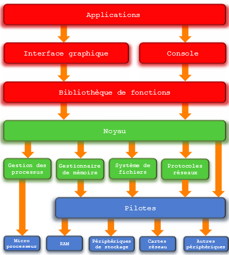
Au niveau utilisateur, nous trouvons les applications, exécutées via l'interface graphique ou directement en mode commandes. Les applications peuvent utiliser des bibliothèques de fonctions. Ces applications s'appuient sur le noyau, élément central du système d'exploitation, qui génére des appels système pour accéder à une ressource. Selon la nature de la ressource nécessaire, des gestionnaires spécifiques sont sollicités : le gestionnaire de processus pour l'exécution d'un programme par le microprocesseur, le gestionnaire de mémoire pour l'accès à une donnée en mémoire, le système de fichiers pour la gestion des périphériques de stockage de masse (disque dur, DVD...), les protocoles réseaux pour les outils de gestion des différents réseaux disponibles. Chaque ressource physique est gérée par un pilote, seule entité logicielle capable du dialogue avec le périphérique. Pour de nombreux périphériques, un gestionnaire spécifique n'est pas nécessaire : le noyau peut solliciter directement le pilote concerné. Les processus
Introduction
Dans les années 1970 les ordinateurs personnels n'étaient pas capables d'exécuter plusieurs tâches à la fois : on lançait un programme et on y restait jusqu'à ce que celui-ci plante ou se termine. Les systèmes d'exploitation récents (Windows, Linux ou Mac OS X par exemple) permettent d'exécuter plusieurs tâches simultanément - ou en tous cas, donner l'impression que celles-ci s'exécutent en même temps. A un instant donné, il n'y a donc pas un mais plusieurs programmes qui sont en cours d'exécution sur un ordinateur : on les nomme processus.
A retenir
Une des tâches du système d'exploitation est d'allouer à chacun des processus les ressources dont il a besoin en termes de mémoire, entrées-sorties ou temps processeur, et de s'assurer que les processus ne se gênent pas les uns les autres.
Nous avons tous été confrontés à la problématique de la gestion des processus dans un système d'exploitation, en tant qu'utilisateur :
- Quand nous cliquons sur l'icône d'un programme, nous provoquons la naissance d'un ou plusieurs processus liés au programme que nous lançons.
- Quand un programme ne répond plus, il nous arrive de lancer le gestionnaire de taches pour tuer le processus en défaut.
Définition
Un processus est un programme en cours d'exécution sur un ordinateur. Il est caractérisé par :
- Un ensemble d'instructions à exécuter - souvent stockées dans un fichier sur lequel on clique pour lancer un programme (par exemple firefox.exe).
- Un espace mémoire dédié à ce processus pour lui permettre de travailler sur des données qui lui sont propres : si vous lancez deux instances de firefox, chacune travaillera indépendamment de l'autre avec ses propres données.
- Des ressources matérielles : processeur, entrées-sorties (accès à internet en utilisant la connexion Wifi).
Vocabulaire
- Exécutable Fichier binaire contenant des instructions en langage machine directement exécutables par le processeur de la machine.
- Thread ou (tâche) Exécution d’une suite d’instructions démarrée par un processus. Deux processus sont l’exécution de deux programmes différents (traitement de texte et navigateur web, par exemple). Deux threads sont l’exécution concurrente de deux suites d’instructions d’un même processus (téléchargement d’une page web et affichage d’une page web).
- Exécution concurrente Deux processus ou threads s’exécutent de manière concurrente s’ils se partagent l’accès à un processeur. Ils ne s’exécutent donc pas au même moment.
- Exécution parallèle Deux processus ou threads s’exécutent en parallèle s’ils s’exécutent au même instant. Plusieurs processeurs dans l’ordinateur sont donc nécessaires à une exécution parallèle.
Attention
Les processus sont isolés par le système d’exploitation, ils ne partagent pas la même zone de la mémoire alors que les threads issus d’un même processus peuvent accéder aux variables globales du programme et occupent le même espace mémoire.
Il ne faut donc pas confondre le fichier contenant un programme (portent souvent l'extension .exe sous windows) et le ou les processus qu'ils engendrent quand ils sont exécutés : un programme est juste un fichier contenant une suite d'instructions alors que les processus sont des instances de ce programme ainsi que les ressources nécessaires à leur exécution (plusieurs fenêtres de firefox ouvertes en même temps). Ainsi, dans une même machine, il peut y avoir plusieurs instances d’exécution d’un même programme !
Exercice 1 ⭐
Sur les systèmes d'exploitation Windows, on peut aisément obtenir la liste des processus chargés en mémoire à l'aide du Gestionnaire des tâches (Ctrl＋Alt＋Del).
Plusieurs onglets apparaissent. Celui permettant d'obtenir le plus de détails est :
- Windows 7 : onglet Processus
- Windows 10 : onglet Détails
Ouvrir le gestionnaire des tâches de votre ordinateur (Windows) et citer plusieurs processus d'un même programme simultanément chargés.
Contexte d’exécution
Lorsque plusieurs processus sont lancés, le (cœur d’un) processeur doit basculer de l’un à l’autre (ce basculement rapide est appelé multiprogrammation). Ce basculement étant imprévisible, la vitesse de traitement d’un processus donné :
- n’est pas uniforme : elle pourra être plus rapide au début de l’exécution qu’à la fin, ou l’inverse !
- n’est pas reproductible : si le même processus s’exécute une nouvelle fois, sa durée d’exécution sera différente.
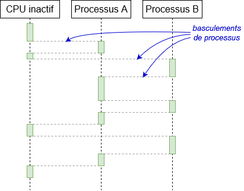
Le contexte d’exécution (execution context) d’un processus est l’ensemble des éléments liés à son exécution :
- PID (Chaque processus possède un code unique appelé identifiant de processus (PID – Process IDentifier)
- État du processus
- Valeurs des registres du processeur
- Mémoire : Plage d’adresses de la mémoire allouée par le processus
- Ressources :
- fichiers ouverts
- connexions réseau en cours d’utilisation
Cet ensemble de données constitue le bloc de données contextuelles ou bloc de contrôle du processus (PCB – Process Control Block). Il est sauvegardé à chaque changement de contexte (context switching) : opération de remplacement d’un contexte d’exécution par un autre.
Les différents états d'un processus
Un processus peut être vu comme quelque chose qui prend un certain temps, donc qui a un début et (parfois) une fin. Un processus peut se trouver dans différents états :
- Nouveau : le processus est en cours de création, l’exécutable est en mémoire et le PCB initialisé.
- Prêt (ready ou runnable) ou en attente (waiting) : le processus attend d’être affecté à un processeur.
- Élu (running) : le processus a accès au processeur pour exécuter ses instructions.
- Bloqué (sleeping) ou endormi (sleeping) : pendant son exécution (état élu), le processus réclame une ressource qui n'est pas immédiatement disponible. Son exécution s'interrompt. Lorsque la ressource sera disponible, le processus repassera par l'état prêt et attendra à nouveau son tour.
- Terminé (terminated) : le processus est terminé (soit normalement, soit suite à une anomalie). Il doit être déchargé de la mémoire par l’OS, et les ressources qu’il utilisait libérées.
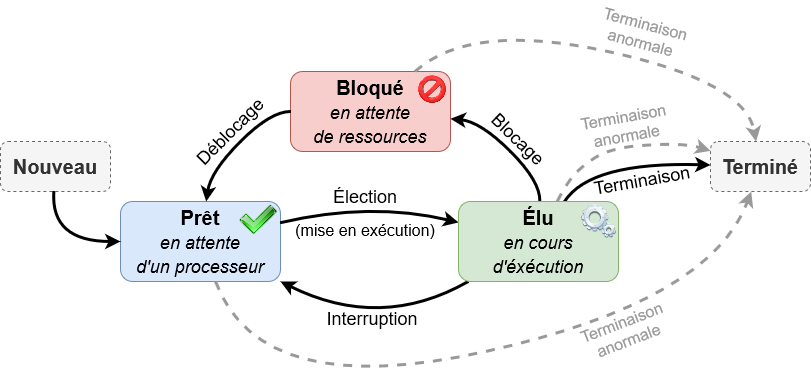
Ou de manière simplifiée :
 Selon les systèmes d’exploitation, il peut se produire d’autres états possibles pour des processus :
Selon les systèmes d’exploitation, il peut se produire d’autres états possibles pour des processus :
- Zombie : Une fois arrêté, le processus informe son parent afin que ce dernier l'élimine de la table des processus. Cet état est donc temporaire mais il peut durer si le parent meure avant de pouvoir effectuer cette tâche. Dans ce cas, le processus fils reste à l'état zombie...
- ...
Passage d'un état à un autre
Lorsque le processus bloqué finit par obtenir la ressource attendue, celui-ci peut potentiellement reprendre son exécution. Cependant, bien que les systèmes d'exploitation permettent de gérer plusieurs processus "en même temps", il n’en demeure pas moins qu’un seul processus peut se trouver dans un état élu (le microprocesseur ne peut "s'occuper" que d'un seul processus à la fois).
Quand un processus passe d'un état élu à un état bloqué, un autre processus peut alors "prendre sa place" et passer dans l'état élu. Le processus qui vient de recevoir la ressource attendue ne va donc pas forcément pouvoir reprendre son exécution tout de suite, car pendant qu'il était dans à état bloqué, un autre processus a "pris sa place".
Un processus qui quitte l'état bloqué ne repasse pas forcément à l'état élu, il peut, en attendant que "la place se libère" passer dans l'état prêt ( "j'ai obtenu ce que j'attendais, je suis prêt à reprendre mon exécution dès que la "place sera libérée"").
Un processus qui utilise une ressource doit la "libérer" une fois qu'il a fini de l'utiliser afin de la rendre disponible pour les autres processus. Pour libérer une ressource, un processus doit obligatoirement être dans un état élu.
Le passage de l'état prêt vers l'état élu constitue l'opération "d'élection". Le passage de l'état élu vers l'état bloqué est l'opération de "blocage". Un processus est toujours créé dans l'état prêt. Pour se terminer, un processus doit obligatoirement se trouver dans l'état élu.
A retenir
Il est fondamental de bien comprendre que le "chef d'orchestre" qui attribue aux processus leur état élu, bloqué ou prêt est le système d'exploitation. On dit que le système d’exploitation gère l'ordonnancement des processus (un processus sera prioritaire sur un autre...).
Quelques précisions sur l'état élu
Lorsqu'un processus est dans l'état élu, il va trouver à sa disposition un grand nombre de ressources, comme la RAM, les disques durs, les supports amovibles (clés USB,..), les fichiers.... mais il ne peut utiliser une ressource qu’en suivant la séquence des trois étapes suivante : Requête – Utilisation – Libération
Le processus fait une demande pour utiliser la ressource. Si cette demande ne peut pas être satisfaite immédiatement, parce que la ressource n’est pas disponible, le processus demandeur se met en état attente jusqu’à ce que la ressource devienne libre.
Le processus peut exploiter la ressource.
Le processus libère la ressource qui devient disponible pour les autres processus éventuellement en attente.
Destruction d'un processus
Lors de la destruction, le processus libère les ressources allouées.
Il y a quatre causes possibles de la destruction d’un processus :
- Arrêt normal : cet arrêt est volontaire et intervient lorsque le processus termine sa tâche.
- Arrêt pour erreur : cet arrêt est volontaire, il fait suite à une erreur pour une instruction illégale.
- Arrêt pour erreur fatale : cet arrêt est involontaire et intervient généralement lorsque les paramètres de l’exécution du processus sont mauvais.
- Arrêt volontaire par un autre processus.
Processus et ordonnancement
Lorsqu'une unité de calcul est libre, c'est le système d'exploitation qui va déterminer un nouveau processus à affecter à l'unité de calcul, cela s'appelle l'ordonnancement.
Remarques
Il y a plusieurs types d’ordonnancement en fonction de la possibilité d’interrompre une tâche :
- Ordonnancement collaboratif (ou non préemptif) : les tâches ne sont pas interruptibles, autrement dit, un processus en exécution continue jusqu’à ce qu’il se termine ou se bloque.
- Ordonnancement préemptif : le système peut interrompre une tâche à tout moment.
L’ordonnancement collaboratif est plus simple car les tâches rendent la main dès qu’elles sont finies. Par contre, le système est plus instable : si une tâche non interruptible entre dans une boucle infinie...
L’ordonnancement préemptif quant à lui est plus fiable, une erreur dans un programme ne compromet pas le système et ce dernier n’est pas bloqué par certaines tâches trop longues. Par contre cela peut poser des difficultés pour les tâches critiques (driver, écritures ...).
Par exemple :
- MsDos et Windows 3.1 utilisaient un ordonnancement collaboratif.
- Windows 95 et Windows 98 utilisaient un mode collaboratif pour certaines tâches.
- Windows NT, XP et les suivants, MacOs, Unix, Linux... utilisent le préemptif.
Pour organiser un ordonnancement, il existe plusieurs algorithmes d'ordonnancement :
- Parmi les ordonnancements collaboratifs :
- Le modèle FIFO (First In First Out) : on affecte les processus dans l'ordre de leur apparition dans la file d'attente.
- Le modèle SJF (Shortest Job First) : on affecte en premier le « plus court processus » de la file d'attente à l'unité de calcul.
- Parmi les ordonnancements préemptifs :
- Le modèle Round Robin (ou méthode du tourniquet) : on effectue un bloc de chaque processus présents dans la file d'attente à tour de rôle, pendant un quantum de temps (c'est-à-dire un temps d'allocation du processeur au processus) d'en général 20 à 30 ms. Si le processus n'est pas terminé, il repart en fin de liste d'attente.
- Le modèle SRT (Shortest Remaining Time) : il s'agit de la version préemptive de l’algorithme SJF. Un processus arrive dans la file de processus, l’ordonnanceur compare la valeur espérée pour ce processus avec la valeur du processus actuellement en exécution. Si le temps du nouveau processus est plus petit, il rentre en exécution immédiatement.
Il existe d'autres algorithmes d'ordonnancement, comme par exemple le modèle Priorité, où chaque processus dispose d’une valeur de priorité et on choisit le processus de plus forte priorité à chaque fois (nous ne détaillerons pas cet algorithme).
Afin de savoir si un algorithme est préférable pour un ensemble de processus, nous devons connaître quelques définitions.
Représentation de l'ordonnancement
Réaliser l'ordonnancement d'une succession de processus consiste à compléter le tableau suivant :
| Processus | P1 | P2 | P3 | ... |
|---|---|---|---|---|
| Durée en quantum | ... | ... | ... | ... |
| Date d'arrivée | ... | ... | ... | ... |
| Temps de terminaison | ... | ... | ... | ... |
| Temps d'exécution | ... | ... | ... | ... |
| Temps d'attente | ... | ... | ... | ... |
Pour illustrer les définitions qui suivent, nous allons traiter sur un exemple, un ordonnancement avec le modèle SJF :
| Processus | P1 | P2 | P3 | P4 | P5 |
|---|---|---|---|---|---|
| Durée en quantum | |||||
| Date d'arrivée | |||||
| Temps de terminaison | |||||
| Temps d'exécution | |||||
| Temps d'attente |
Le schéma d'ordonnancement de ces processus sur le modèle SJF est le suivant :
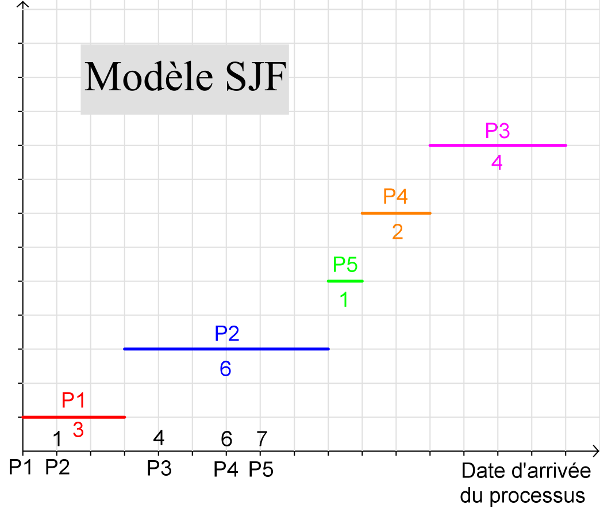
On peut représenter ce schéma de la façon suivante :
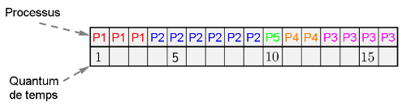
Temps d'arrivée
Le temps d'arrivée d'un processus, ou temps de soumission, correspond au moment où le processus arrive dans la file d'attente.
En reprenant l'exemple précédent, le temps d'arrivée du processus P5 est et celui de P4 est .
Durée du processus
La durée du processus P, ou durée d'exécution sur le coeur, correspond à la durée en quantum nécessaire à l'execution du processus.
Ainsi, la durée du processus P5 est . Celui de P4 est .
Temps de terminaison
Le temps de terminaison d'un processus P est la durée écoulée entre le temps et le temps où le processus est terminée.
Avec l'exemple précédent, on obtient :
| Processus | P1 | P2 | P3 | P4 | P5 |
|---|---|---|---|---|---|
| Durée en quantum | |||||
| Date d'arrivée | |||||
| Temps de terminaison | |||||
| Temps d'exécution | |||||
| Temps d'attente |
Temps d'exécution
Le temps d'exécution du processus P, ou temps de séjour, correspond à la différence entre le temps de terminaison de P et son temps d'arrivée.
Complétons alors le tableau de l'exemple précédent :
| Processus | P1 | P2 | P3 | P4 | P5 |
|---|---|---|---|---|---|
| Durée en quantum | |||||
| Date d'arrivée | |||||
| Temps de terminaison | |||||
| Temps d'exécution | |||||
| Temps d'attente |
Le temps moyen d'exécution est alors : \(\displaystyle\frac{3~+~8~+~12~+~6~+~3}{5}=\displaystyle\frac{32}{5}~\) soit \(~6,4\).
Temps d'attente
Le temps d'attente d'un processus P, ou durée d'attente, correspond à la différence entre le temps d'exécution et la durée du processus.
Ce qui nous donne :
| Processus | P1 | P2 | P3 | P4 | P5 |
|---|---|---|---|---|---|
| Durée en quantum | |||||
| Date d'arrivée | |||||
| Temps de terminaison | |||||
| Temps d'exécution | |||||
| Temps d'attente |
Le temps moyen d'attente est alors : \(\displaystyle\frac{0~+~2~+~8~+~4~+~2}{5}=\displaystyle\frac{16}{5}~\) soit \(~3,2\).
Remarque
Actuellement, la plupart des systèmes d’exploitation utilise une évolution du modèle Priorité, reposant sur les principes suivants :
- Chaque processus possède une priorité de base.
- Cette priorité augmente quand le processus est inactif et diminue quand il est actif (le taux de changement dépend de la priorité de base).
- Le système choisit parmi les processus de plus forte priorité.
Notion d'interblocage
Définition
Exemple
Soient deux ressources R1 et R2 qui sont toutes les deux à un seul point d’accès, c’est-à-dire que seul un processus à la fois a le droit d’utiliser la ressource.
Soient également deux processus P1 et P2 qui utilisent tous les deux les ressources R1 et R2 pour effectuer un traitement.
Les processus P1 et P2 sont programmés tels que P1 demande d'abord à s'allouer R1 puis R2 avant de commencer son traitement tandis que le processus P2 demande d'abord à s'allouer la ressource R2 puis la ressource R1 avant de commencer son traitement.
Les deux processus sont prêts à s'exécuter.
L'ordonnanceur choisit d'abord d’exécuter P1. P1 demande à prendre la ressource R1 et comme les ressources sont initialement libres, P1 obtient la ressource R1.
Puis l’ordonnanceur commute et choisit maintenant d'exécuter le processus P2. P2 demande à s'allouer la ressource R2 et puisque la ressource R2 est libre, P2 obtient la ressource R2.
Maintenant P2 continue son exécution et demande à accéder à la ressource R1. P2 est bloqué puisque R1 a été allouée au processus P1. Puisque P2 est bloqué, l' ordonnanceur reprend l'exécution de P1 qui demande pour sa part maintenant à accéder à la ressource R2. Comme R2 a été allouée au processus P2, P1 est à son tour bloqué.
Les deux processus P1 et P2 sont mutuellement bloqués : en effet le processus P1 attend le processus P2 pour disposer de la ressource R2 tandis que le processus P2 attend le processus P1 pour disposer de la ressource R1. Comme aucun des deux processus ne peut poursuivre son exécution et donc rendre les ressources qu'il possède, le blocage est permanent : on dit que les processus P1 et P2 sont en situation d'interblocage (ou d'étreinte fatale).
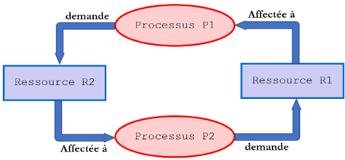
Définition
Un ensemble de processus est dit en situation d’interblocage lorsque l'ensemble de ces processus attend chacun une ressource déjà possédée par un autre processus de l'ensemble.
Dans une telle situation aucun processus ne peut poursuivre son exécution.
L'attente des processus est infinie.
Remarques
- Lorsqu'un processus attend indéfiniment une ressource on dit qu'il est dans une situation de famine.
- Quatre conditions sont nécessaires à l'interblocage (appelées conditions de Coffman) :
- Exclusion mutuelle : Les ressources ne sont pas partageables, un seul processus à la fois peut utiliser la ressource.
- Possession et attente : Les processus qui détiennent des ressources peuvent en demander d’autres.
- Sans préemption : Les ressources ne sont pas préemptibles c'est-à-dire que les libérations sont faites volontairement par les processus. On ne peut pas forcer un processus à rendre une ressource.
- Attente circulaire : il doit y avoir un cycle d'au moins deux processus, chacun attendant une ressource détenue par un autre processus.
Traitement des interblocages
Il y a 4 méthodes de traitement des situations d'interblocage : les politiques de guérison, les politiques de prévention ou d'évitements et la politique de "l'autruche".
- Jouer la politique de "l'autruche" : on peut faire l'autruche et ignorer les possibilités d'interblocages. Cette stratégie est celle de la plupart des systèmes d'exploitation courants car le prix à payer pour les éviter est élevé. Simplement la machine est redémarrée lorsque trop de processus sont en interblocage.
- Les détecter et y remédier : on tente de traiter les interblocages, en détectant les processus interbloqués et en les éliminant.
- Les éviter : en allouant dynamiquement les ressources avec précaution. Le système d'exploitation peut suspendre le processus qui demande une allocation de ressource s'il constate que cette allocation peut conduire à un interblocage. Il lui attribuera la ressource lorsqu'il n'y aura plus de risque.
- Les prévenir : en empêchant l'apparition de l'une des quatre conditions de leur existence.
L'interblocage dans la mission Mars Pathfinder
La situation
En 1997, la mission Mars Pathfinder rencontre un problème alors que le robot est déjà sur Mars. Après un certain temps, des données sont systématiquement perdues. Les ingénieurs découvrent alors un bug lié à la synchronisation de plusieurs tâches. Les éléments incriminés étaient les suivants :
- une mémoire partagée, qui était protégée par un mutex (un mutex est un système de verrou du noyau) ;
- une gestion de bus sur la mémoire partagée, qui avait une priorité haute ;
- une écriture en mémoire partagée (récupération de données), qui avait la priorité la plus basse ;
- une troisième routine de communication, avec une priorité moyenne, qui ne touchait pas à la mémoire partagée.
Il arrivait parfois que l'écriture (priorité faible) s'approprie le mutex. La gestion du bus (priorité haute) attendait ce mutex. La commutation de tâches laissait alors la routine de communication (priorité moyenne) s'exécuter. Or pendant ce temps, le mutex restait bloqué puisque les ressources étaient allouées à la routine de priorité basse. La gestion de bus ne pouvait donc plus s'exécuter et après un certain temps d'attente (une protection insérée par les ingénieurs via un système dit de chien de garde), le système effectuait un redémarrage. Un tel problème est connu sous le nom d'inversion de priorité. Le problème n'était pas critique et le code fut corrigé à distance. Toutefois dans d'autres situations, les conséquences auraient pu être catastrophiques. On a ensuite constaté le fait que le problème était déjà survenu lors des essais sans avoir été corrigé.
Simulation de l'interblocage
Nous allons nous même simuler un interblocage dans une situation qui serait assez similaire à celle de la liaison martienne. On va considérer un robot qui a trois ressources :
- des moteurs qui lui permettent de se déplacer ;
- une liaison wifi qui lui permet de communiquer ;
- une caméra qui filme son environnement.
Ce robot a trois processus que l'on notera P1, P2 et P3 :
- P1 est le pilotage manuel qui reçoit les ordres par le wifi et opère les moteurs ;
- P2 envoie le flux vidéo via la liaison wifi ;
- P3 est le processus qui fait un autotest matériel, hors liaison wifi.
Le robot effectue les 3 taches en parallèle. Cela peut se résumer dans le tableau suivant :
| P1 : pilotage manuel | P2 : envoi de flux vidéo | P3 : auto-test |
|---|---|---|
| Demande R1 (moteurs) | Demande R2 (wifi) | Demande R3 (camera) |
| Demande R2 (wifi) | Demande R3 (camera) | Demande R1 (moteurs) |
| Libère R1 (moteurs) | Libère R2 (wifi) | Libère R3 (caméra) |
| Libère R2(wifi) | Libère R3 (caméra) | Libère R1 (moteurs) |
Cette séquence d'instruction peut se dérouler parfaitement bien, mais on peut arriver à une situation d'interblocage par un cycle.
- P1 demande la ressource R1, disponible, et la bloque ;
- P2 demande la ressource R2, disponible, et la bloque ;
- P3 demande la ressouce R3, disponible et la bloque ;
- étape suivante, P1 demande R2 mais doit attendre que P2 la libère ;
- P2 demande R3, qui est bloquée par P3 ;
- Et P3 demande R1 qui est bloqué par P1.
La boucle est bouclée. On arrive à une situation correspondant à la figure ci-dessous, ou chaque processus a bloqué la ressource associée par un trait plein et attend la ressource à laquelle il est relié par des pointillés. On est bloqué dans une boucle infernale.
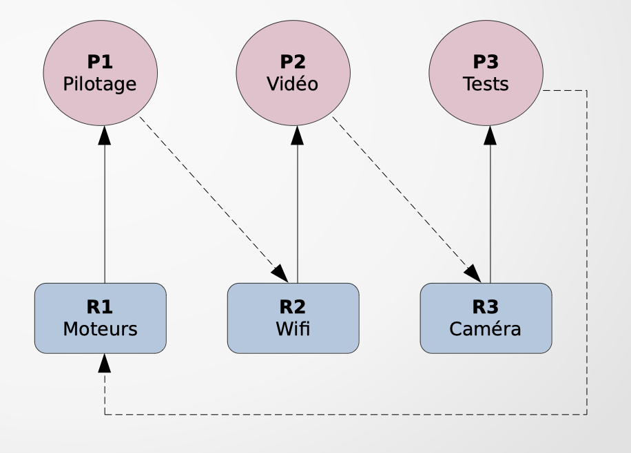
A retenir
Les systèmes d'exploitation multitâches sont la norme. Ils permettent d'exécuter de façon concurrente plusieurs programmes.
L'exécution d'un programme s'appelle un processus.
C'est le système d'exploitation, et en particulier l'ordonnanceur, qui détermine quel processus s'exécute à un instant donné. Le fait pour un processus d'être interrompu s'appelle une commutation de contexte.
Plusieurs processus s'exécutant de façon concurrente peuvent s'interbloquer s'ils attendent de pouvoir accéder à un même ensemble de ressources en accès exclusif.
Les threads ou processus légers sont des "sous-processus" s'exécutant de manière concurrente.
Pour aller plus loin : Programmation concurrente en Python (optionnel)
Afin d'illustrer les problématiques d'interblocage dans un cadre plus contrôlé que dans un système d'exploitation, nous donnons dans cet exercice une introduction à la programmation multithread en Python.
Un thread est un "sous-processus" démarré par un processus et s'exécutant de manière concurrente avec le reste du programme.
Le module threading de la bibliothèque standard Python permet de démarrer des threads. Nous illustrons son utilisation au moyen du programme suivant :
import threading
import time
def hello(n):
for i in range (5):
print(f"je suis le thread {n} et ma valeur est {i}")
time.sleep(0.000000001) # simule un traitement nécessitant des calculs
print(f"----- Fin du Thread {n}")
for n in range (4):
t = threading.Thread(target=hello, args=[n])
t.start()
Ce programme définit une fonction hello prenant en argument un entier représentant l'identifiant du thread dans lequel on se trouve.
Cette fonction effectue ensuite une boucle pour i allant de 0 à 4 et écrit à chaque tour de boucle la valeur de n et de i. La fonction imprime ensuite un message indiquant qu'elle a terminé la boucle puis se termine.
Le programme principal effectue une boucle et appelle quatre fois (pour n entre 0 et 3) l'expression threading.Thread(target=hello, args=[n]).
Cette dernière crée un objet de type Thread. L'argument nommé target doit être une fonction et l'argument args un tableau des arguments qui seront passés à la fonction. La variable t contient l'objet Thread créé. La méthode .start() lance l'exécution de la fonction en tâche de fond. Cette méthode rend directement la main et le programme principal continue de s'exécuter de façon concurrente au thread démarré.
Le programme ci-dessus, une fois exécuté, comporte alors cinq threads : ceux démarrés par .start() et le thread principal. Voici un affichage possible pour ce programme :
je suis le thread 0 et ma valeur est 0
je suis le thread 1 et ma valeur est 0
je suis le thread 2 et ma valeur est 0
je suis le thread 1 et ma valeur est 1
je suis le thread 0 et ma valeur est 1
je suis le thread 3 et ma valeur est 0
je suis le thread 2 et ma valeur est 1
je suis le thread 3 et ma valeur est 1
je suis le thread 0 et ma valeur est 2
je suis le thread 1 et ma valeur est 2
je suis le thread 1 et ma valeur est 3
je suis le thread 0 et ma valeur est 3
je suis le thread 3 et ma valeur est 2
je suis le thread 2 et ma valeur est 2
je suis le thread 2 et ma valeur est 3
je suis le thread 3 et ma valeur est 3
je suis le thread 0 et ma valeur est 4
je suis le thread 1 et ma valeur est 4
----- Fin du Thread 1
----- Fin du Thread 0
je suis le thread 3 et ma valeur est 4
je suis le thread 2 et ma valeur est 4
----- Fin du Thread 2
----- Fin du Thread 3
Comme pour les processus, les threads alternent leur exécution au gré des changements de contexte. L'ordre dans lequel sont démarrés les threads ne donne aucune indication sur l'ordre dans lequel ils peuvent se terminer (dans l'exemple ci-dessus, le thread 0, démarré en premier se termine après le thread 1).
Les threads peuvent servir à illustrer les problèmes de concurrence et d'interblocage.
Considérons le programme suivant :
import threading
import random
compteur = 0
def incrc():
global compteur
for i in range (100000):
v = compteur
a = random.randint(1, 5)
compteur = v + 1
th = []
for n in range(4):
t = threading.Thread(target=incrc, args=[])
t.start()
th.append(t)
for t in th:
t.join()
print (f"valeur finale : {compteur}")
Remarque
Pour un rappel et des compléments sur la notion de variables locale et globale, cliquez ici
Le programme précédent définit une variable globale compteur. La fonction incrc est similaire à la fonction hello du programme précédent. Elle ne prend pas d'argument mais exécute 100 000 itérations d'une boucle qui incrémente la variable globale compteur.
Le programme principal déclare un tableau vide th. Il démarre ensuite quatre threads et stocke les objets correspondants dans le tableau th, après les avoir démarrés.
Ensuite, pour chacun des objets Thread stockés, la méthode .join() est appelée. Cette dernière permet d'attendre que le thread auquel on l'applique soit terminé. Si le thread est déjà terminé, la méthode se termine immédiatement.
Enfin, le programme imprime la valeur finale contenue dans le compteur.
Comme on a démarré quatre threads, et que chacun incrémente la valeur 100 000 fois, on s'attend à ce que l'affichage final soit 400 000. Cependant, si on exécute le programme plusieurs fois, on peut constater qu'il n'affiche pas toujours le nombre attendu :
>>> (executing file "Thread2.py")
valeur finale : 396123
Que se passe-t-il ?
Considérons les quatre threads t0 à t3.
Supposons que t0 soit en exécution et que la valeur de compteur soit 42.
Si t0 est interrompu juste après avoir exécuté v = compteur, alors sa variable locale v contient la valeur 42.
La commutation de contexte donne la main à t1, qui exécute v = compteur suivi de compteur = v + 1 avant d'être lui-même interrompu.
La valeur de compteur continue d'augmenter lors des commutations de contexte suivantes avec t2 et t3 jusqu'à avoir compteur valant 50 par exemple.
Lorsque t0 reprend enfin la main, il continue là où il s'était arrêté et exécute donc compteur = v + 1, où la valeur de v est 42 ! Le thread t0 va donc écraser la valeur 50 avec la valeur 43.
Pour corriger ce problème, il nous faut donc garantir l'accès exclusif à la variable compteur entre sa lecture et son écriture.
On peut pour cela utiliser un verrou. Un verrou est un objet que l'on peut essayer d'acquérir.
- Si on est le premier à faire cette demande, on acquiert le verrou. On peut le rendre à tout moment.
- Si en revanche quelqu'un d'autre tient le verrou, alors on est bloqué jusqu'à ce qu'il soit libéré.
Lock. Une fois l'objet verrou construit, on peut tenter de l'acquérir avec la méthode .acquire() et on peut le rendre avec la méthode .release().
Une manière de corriger le programme précédent est la suivante :
import threading
import random
compteur = 0
verrou = threading.Lock()
def incrc():
global compteur
for i in range (100000):
verrou.acquire()
v = compteur
a = random.randint(1, 5)
compteur = v + 1
verrou.release()
th = []
for n in range(4):
t = threading.Thread(target=incrc, args=[])
t.start()
th.append(t)
for t in th:
t.join()
print (f"valeur finale : {compteur}")
Avant toute tentative de lecture, on essaye d'acquérir le verrou.
Une fois ce dernier acquis, le thread courant a la garantie qu'il est le seul à exécuter son code, jusqu'à l'instruction verrou.release().
Une telle portion de code protégée par un verrou s'appelle une section critique.
Attention
Cela ne signifie pas que le thread ne peut pas être interrompu entre les lignes v = compteur et compteur = v + 1 mais cela signifie seulement que les autres threads, s'ils reprennent la main, ne sont pas eux-mêmes en section critique (ils sont forcément ailleurs dans leur code, probablement bloqués sur l'instruction verrou.acquire()).
Aussi, il est important que tous les threads manipulent le même verrou. C'est pour cela qu'il a été défini dans une variable globale accessible depuis tous les threads.
L'utilisation de plusieurs verrous rend les interblocages possibles. Il conviendra d'être très prudent lorsque l'on manipule deux verrous à la fois. On illustre ce problème avec le programme suivant :
import threading
import time
verrou1 = threading.Lock()
verrou2 = threading.Lock()
def f1():
verrou1.acquire()
print("Section critique 1.1")
time.sleep(0.000000001)
verrou2.acquire()
print("Section critique 1.2")
verrou2.release()
verrou1.release()
def f2():
verrou2.acquire()
print("Section critique 2.1")
verrou1.acquire()
print("Section critique 2.2")
verrou1.release()
verrou2.release()
mes_threads = []
t1 = threading.Thread(target=f1, args=[])
t2 = threading.Thread(target=f2, args=[])
mes_threads.append(t1)
mes_threads.append(t2)
t1.start()
t2.start()
Ce dernier déclare deux verrous, utilisés de façon symétrique par deux fonctions f1 et f2.
La fonction f1 essaye d'acquérir d'abord verrou1 puis verrou2, alors que f2 essaye de les acquérir dans l'ordre inverse. Si on exécute ce programme, il a de grandes chances de se retrouver bloqué :
>>> (executing file "Thread3.py")
Section critique 1.1
Section critique 2.1
>>> mes_threads
[<Thread(Thread-5, started 10104)>, <Thread(Thread-6, started 2396)>]
On constate que les threads sont actifs mais que l'affichage des messages "Section critique 1.2" et "Section critique 2.2" ne se fait pas. Nous sommes en situation d'interblocage !
Il n'y a pas d'autre choix que de tuer le processus Python et les threads afférents.
Expliquons ce qui vient de se passer :
- Le thread
t1a la main. Il s'exécute jusqu'à son premier affichage (avant la tentative d'acquisition deverrou2). - Le thread
t2prend la main. Il s'exécute, acquiertverrou2qui est toujours libre, puis bloque sur l'acquisition deverrou1. - Le thread
t1reprend la main, il bloque alors sur l'acquisition deverrou2(tenu part2).
Chaque thread détient un verrou et attend l'autre. Ils sont bien en interblocage.
Cependant, le problème ne se manifeste que si les exécutions se font dans cet ordre.
Si la commutation de contexte intervient après que f1 a acquis verrou2, alors t1 peut se terminer sans bloquer.
Dans des programmes complexes, les situations d'interblocage sont particulièrement difficiles à tester et à corriger. En effet, à cause du non déterminisme de l'ordonnancement des threads et des processus, il se peut que le programme se comporte bien lors des phases de test et ne se bloque que lorsqu'il est exécuté en conditions réelles.